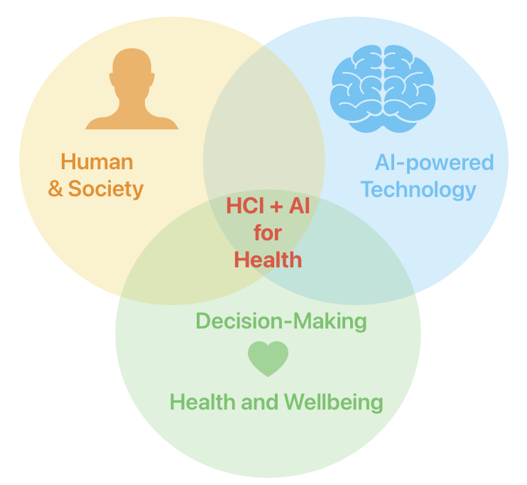

👋 About Me
I am a Human-Computer Interaction (HCI) researcher, currently an Ad Astra Fellow / Assistant Professor in Human-AI Collaboration with the School of Computer Science,
University College Dublin (UCD).
Background:
Before joining UCD, I was a postdoctoral researcher in the Health Technology Design Group at Trinity College Dublin & Lero from 2023 to 2025.
I received my Ph.D. in Computer Science from Hong Kong Baptist University in 2022, and B.Eng in Software Engineering from Shenzhen University in 2018, respectively.
Research Interests:
My research lies at the intersection of human-computer interaction (HCI), artificial intelligence (AI), health and well-being, where I seek to support people in leading healthy, thriving lives through responsible design of AI technologies.
Towards this, my work mainly adopts human-centered methods to explore, design, and evaluate interactive AI systems
(e.g., recommender systems, conversational systems, generative AI, and wearables) to support everyday decision-making and mental health contexts.
My work is inherently interdisciplinary, informed by computer and information science, design, psychology, and cognitive science.
My previous research and collaborative projects have spanned the three interconnected areas below:
- Human-AI Interaction and Collaboration
- Technology for Mental Health and Wellbeing
- Responsible and Ethical Design

Propspective Students
I'm looking for self-motivated PhD students in Fall 2026! If you are interested in designing better human-centered AI for mental health and well-being, please reach out via email with your CV and a brief note on your research interests.